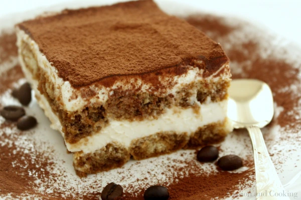

Tiramisu
Tiramisu is a coffee-flavoured, no-bake dessert from Italy.
It's light and creamy, best served cold on a hot summer day.
- 6 Egg Yolks
- 2/3 cup of Milk
- 3/4 cup of White Sugar
- 1 cup of Heavy Cream
- 1 pound Mascarpone Cheese
- 1/4 cup of strong brewed Coffee
- 1 tablespoon of Cocoa powder
- 3 ounces of Ladyfinger Cookies
- 1/2 teaspoon of Vanilla extract
- 2 tablespoons of Liquor
-
Whisk together the Egg Yolks and Sugar in a medium saucepan until well blended.
Whisk in Milk and cook over medium heat, stirring constantly, until it comes to a boil.
- Boil gently for a minute, then remove from the heat and allow it to cool slightly.
- Cover tightly and chill in the refrigerator for an hour.
- Beat Cream and Vanilla in a medium bowl with a mixer until stiff peaks form.
- Remove Egg Yolk mixture from the refrigerator; add Mascarpone and whisk until smooth.
-
Combine Coffee and Liquor in a small bowl.
Split Ladyfingers in half and drizzle with the Coffee mixture.
-
Arrange half of the soaked Ladyfingers at the bottom of a large dish.
Spread half of the Mascarpone mixture over, then spread half of whipped Cream over top.
Repeat the layer once more; sprinkle Cocoa powder over top.
- Cover and refrigerate until set, 4 to 6 hours.
Back